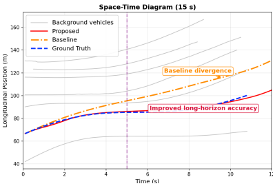
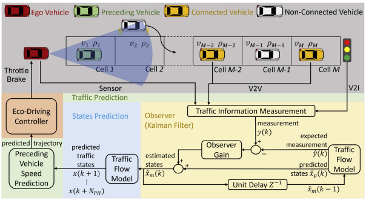
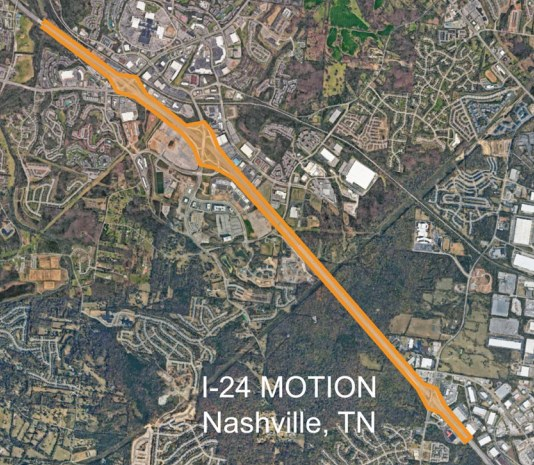
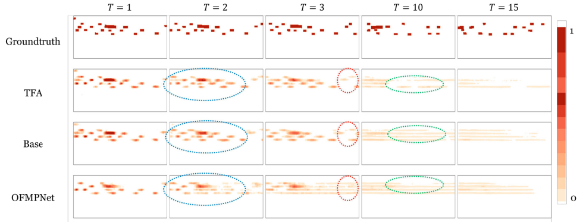

Energy-efficient and safe driving depends on what traffic ahead will do next. We combine learned models for the next few seconds with queue and traffic-flow models for longer horizons, built to feed a controller.

Occupancy-flow prediction for the first 5 s, queue theory for the next 10 s. The joint prediction (red) stays on the true path where a queue-only baseline drifts. [1]

A traffic-flow model with a Kalman filter estimates the road ahead from connected vehicles and predicts the car in front, now including cut-ins: up to 36% lower error. [3]


Occupancy on a freeway segment (I-24 MOTION), ground truth on top and predictions below, from 1 to 15 steps ahead. Adding context from neighbouring segments (TFA) keeps the long-horizon predictions closer to the truth. [2] Code
Where these predictions are used: Real-time optimal control of CAVs · on real campus traffic: Living Lab